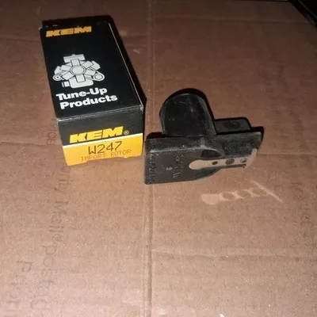
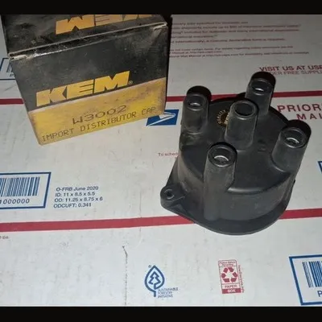
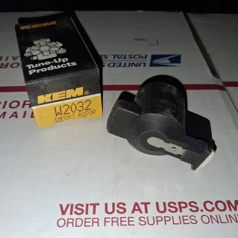
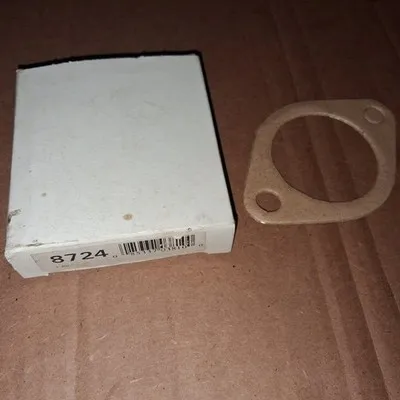
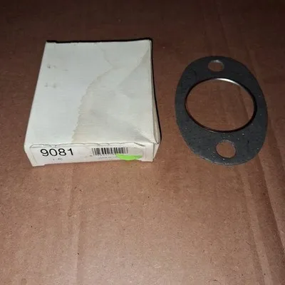
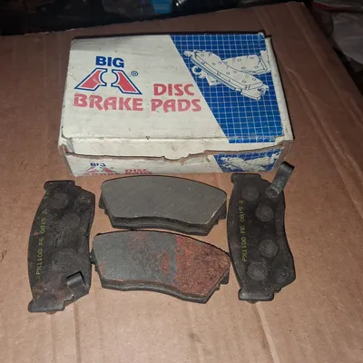
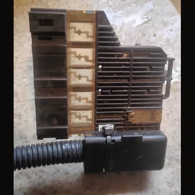
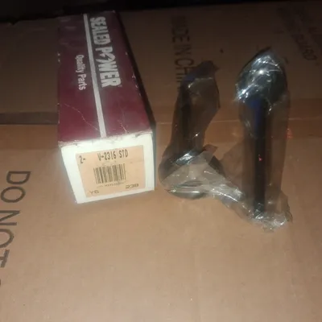
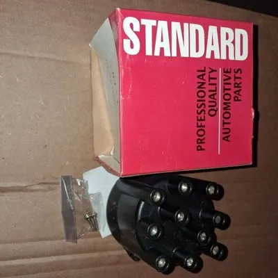

Distributor Rotors
1972-1991 KEM W286X Distributor Rotor Dodge Colt Ram 50 Mazda 808 Ford Courier
W286X
Fits 1986-1991 Nissan Micra · 1974-1991 Dodge Colt (644 listed)
$31.99
View details40 parts whose listing names at least one Nissan vehicle, mostly ignition & tune-up, engine parts and air filters. Fit depends on year, model and engine, so check the full vehicle list on each part page or message us before you buy.
40 parts
Online checkout through Square. Ships from Carbondale, PA, or pick up by confirmed appointment only. Fitment question? Message us.
W286X
Fits 1986-1991 Nissan Micra · 1974-1991 Dodge Colt (644 listed)
$31.99
View details
W299
Fits 1984-1986 Nissan 200SX · 1983-1985 Nissan 720 (27 listed)
$13.99
View details
W343
Fits 1984-1988 Nissan 200SX · 1983-1986 Nissan 720 (25 listed)
$23.99
View details
W247
Fits 1983-1986 Nissan Pulsar NX · 1984-1986 Nissan Sentra (32 listed)
$12.99
View details
W3002
Fits 1983-1988 Nissan Pulsar NX · 1983-1988 Nissan Sentra (57 listed)
$14.99
View details
W2032
Fits 1989-1990 Nissan 240SX · 1990-1994 Nissan D21 (72 listed)
$15.99
View details
AP-8724
Fits 1984-1986 Nissan 200SX · 1983-1984 Nissan Pulsar NX (241 listed)
$18.99
View details
8729
Fits 1993-1998 Nissan Quest · 1990-1996 Nissan 300ZX (113 listed)
$15.99
View details
9081
Fits 1987-1995 Nissan Pathfinder · 1991-1997 Isuzu Rodeo (147 listed)
$21.99
View details
045-0259
Fits 1985-1994 Nissan Maxima · 1987-1995 Nissan Pathfinder (89 listed)
$12.99
View details
2M-7389
Fits 1991-1993 Nissan NX · 1991-1994 Nissan Sentra (47 listed)
$29.99
View details
14082
Fits 1993-2001 Nissan Altima · 1984-1998 Nissan 200SX (2063 listed)
$12.99
View details
17401
Fits 2005-2015 Nissan Armada · 2004 Nissan Pathfinder Armada (346 listed)
$24.99
View details
94087
Fits 1981-1992 Nissan
$27.99
View details
HS9571PT2
Fits 1986-1994 Nissan D21 · 1987-1995 Nissan Pathfinder (57 listed)
$174.99
View details
93125-RB
Fits Nissan Sentra · Nissan Stanza
$24.99
View details
33478
Fits 1984-1988 Nissan 200SX · 1983-1986 Nissan 720 (1479 listed)
$14.99
View details
33479
Fits 1987-1988 Nissan 200SX · 1983-1986 Nissan 720 (817 listed)
$15.99
View details
W2031
Fits 1989-1990 Nissan 240SX · 1990-1994 Nissan D21 (17 listed)
$19.99
View details
W3058
Fits 1989-1990 Nissan 240SX · 1990-1994 Nissan D21 (40 listed)
$26.99
View details
780064
Fits 1984-1988 Nissan 200SX · 2002-2003 Nissan Frontier (47 listed)
$72.99
View details
A4303
Fits 1984-1985 Nissan Maxima · 1980-1983 Datsun 200SX (26 listed)
$19.99
View details
23300-3TA0A
Fits 2013-2016 Nissan Altima · 2014-2016 Nissan Rogue (39 listed)
$39.99
View details
24380-JG70B
Fits 2014-2020 Nissan Rogue (32 listed)
$52.99
View details
66116
Fits 2002-2018 Nissan Altima · 1990-1994 Nissan D21 (187 listed)
$18.99
View details
66213
Fits 2005-2015 Nissan Armada · 2005-2020 Nissan Frontier (416 listed)
$13.99
View details
V-2316
Fits 1983-1988 Nissan Pulsar NX · 1983-1988 Nissan Sentra (65 listed)
$16.99
View details
03612
Fits 1982-1985 Nissan Sentra (47 listed)
$23.99
View details
JH-129
Fits 1984-1988 Nissan 200SX · 1983-1986 Nissan 720 (79 listed)
$26.99
View details
JH152
Fits 1983-1987 Nissan Pulsar NX · 1982-1985 Nissan Sentra (85 listed)
$13.99
View details
JH168
Fits 1985-1987 Nissan Stanza (8 listed)
$18.99
View details
JR-117
Fits 1984-1988 Nissan 200SX · 1987-1989 Nissan Stanza (51 listed)
$21.99
View details
JR72
Fits 1984-1988 Nissan Pickup · 1976-1989 Honda Accord (693 listed)
$12.99
View details
BD61355
Fits 1984-1988 Nissan 200SX · 1991-1994 INFINITI G20 (46 listed)
$24.99
View details
24857
Fits 2004-2006 Nissan Altima · 2004-2007 Nissan Maxima (81 listed)
$21.99
View details
33023
Fits 1995-1998 Nissan 200SX · 1991-1998 Nissan 240SX (506 listed)
$20.99
View details
42136
Fits 1984-1988 Nissan 200SX · 1984-1990 Nissan 300ZX (219 listed)
$22.99
View details
46027
Fits 1998-2004 Nissan Frontier · 2000-2004 Nissan Xterra (4 listed)
$24.99
View details
46190
Fits 1989-1990 Nissan Pulsar NX · 1989-1990 Nissan Sentra (18 listed)
$22.99
View details
51361
Fits 1988-1998 Nissan 200SX · 1989-1998 Nissan 240SX (49 listed)
$16.99
View details